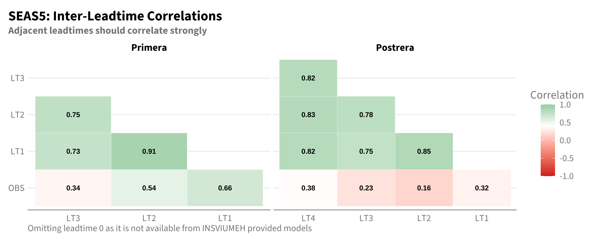
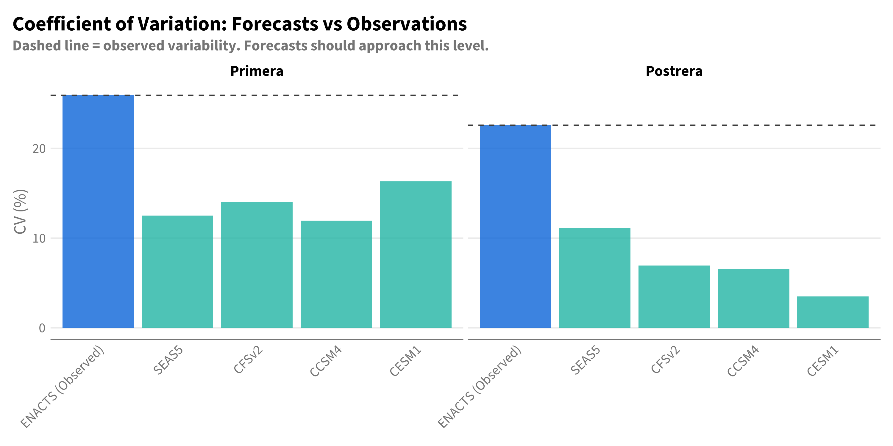
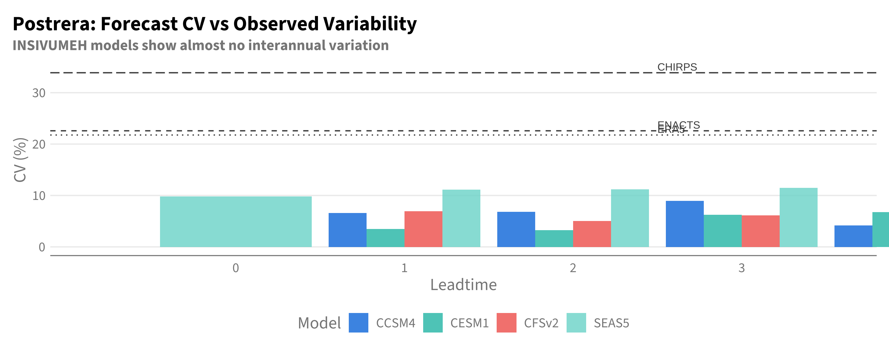

Setup
library(tidyverse)
library(lubridate)
library(cumulus)
library(gghdx)
gghdx()
box::use(../../R/enacts)
box::use(../../R/seas5)
BASELINE_START <- 2000
BASELINE_END <- 2024
PRIMERA_MONTHS <- 5:8
POSTRERA_MONTHS <- 9:11In Chapter 4, CCSM4 showed a suspicious pattern for Postrera: skill at LT2-3 exceeded skill at LT1. This is backwards—forecast skill should degrade with increasing leadtime, not improve.
This chapter investigates whether this pattern reflects genuine predictability or a data quality issue by examining:
library(tidyverse)
library(lubridate)
library(cumulus)
library(gghdx)
gghdx()
box::use(../../R/enacts)
box::use(../../R/seas5)
BASELINE_START <- 2000
BASELINE_END <- 2024
PRIMERA_MONTHS <- 5:8
POSTRERA_MONTHS <- 9:11# Forecasts
df_insiv <- cumulus::blob_read(
name = "ds-aa-lac-dry-corridor/data/processed/insivumeh_special/insivumeh_special_models_zonal_seasonal_chiquimula.parquet",
container = "projects"
)
df_seas5 <- seas5$load_seas5_seasonal()
# Observations
df_enacts <- enacts$load_enacts_seasonal("chiquimula")
# Combine forecasts
df_fcst_all <- bind_rows(df_insiv, df_seas5) |>
filter(year >= BASELINE_START, year <= BASELINE_END) |>
mutate(model = str_remove(forecast_source, "INSIVUMEH_"))For a well-behaved forecast system, predictions at different leadtimes for the same target season should be correlated—they’re all trying to predict the same thing. If LT1 and LT2 forecasts are uncorrelated, one or both must be essentially random.
compute_lt_corr_matrix <- function(df, model_name, window_name) {
df_wide <- df |>
filter(model == model_name, window == window_name, !is.na(leadtime)) |>
select(year, leadtime, value) |>
pivot_wider(names_from = leadtime, values_from = value, names_prefix = "LT")
# Add observations
df_obs <- df_enacts |>
filter(window == window_name, year >= BASELINE_START, year <= BASELINE_END) |>
select(year, obs_mm)
df_wide <- df_wide |>
left_join(df_obs, by = "year") |>
rename(OBS = obs_mm)
# Compute correlation matrix - only keep LT and OBS columns
cor_mat <- df_wide |>
select(starts_with("LT"), OBS) |>
cor(use = "pairwise.complete.obs")
cor_mat
}models <- unique(df_fcst_all$model)
windows <- c("primera", "postrera")
# Compute all correlation matrices
corr_results <- expand_grid(model = models, window = windows) |>
mutate(
corr_mat = map2(model, window, ~compute_lt_corr_matrix(df_fcst_all, .x, .y))
)# Extract SEAS5 matrices
seas5_primera <- corr_results |>
filter(model == "SEAS5", window == "primera") |>
pull(corr_mat) |>
pluck(1)
seas5_postrera <- corr_results |>
filter(model == "SEAS5", window == "postrera") |>
pull(corr_mat) |>
pluck(1)
# Convert to long format for plotting (lower triangle only)
mat_to_df <- function(mat, label) {
var_order <- c("LT4", "LT3", "LT2", "LT1", "OBS")
# Filter to only include columns that exist in the matrix
var_order <- var_order[var_order %in% colnames(mat)]
as.data.frame(mat) |>
mutate(row = rownames(mat)) |>
pivot_longer(-row, names_to = "col", values_to = "cor") |>
mutate(
label = label,
row_idx = match(row, var_order),
col_idx = match(col, var_order)
) |>
# Keep lower triangle only (row_idx > col_idx)
filter(row_idx > col_idx) |>
select(-row_idx, -col_idx)
}
df_seas5_corr <- bind_rows(
mat_to_df(seas5_primera, "Primera"),
mat_to_df(seas5_postrera, "Postrera")
) |>
mutate(
label = fct_relevel(label, "Primera","Postrera")
)
df_seas5_corr |>
mutate(
row = factor(row, levels = rev(c("LT4", "LT3", "LT2", "LT1", "OBS"))),
col = factor(col, levels = c("LT4", "LT3", "LT2", "LT1", "OBS"))
) |>
ggplot(aes(x = col, y = row, fill = cor)) +
geom_tile(color = "white") +
geom_text(aes(label = sprintf("%.2f", cor)), size = 3, fontface = "bold", color = "black") +
facet_wrap(~label, scales = "free_x") +
scale_fill_gradient2(low = "#D73027", mid = "white", high = "#1A9850", midpoint = 0.4, limits = c(-1, 1)) +
labs(
title = "SEAS5: Inter-Leadtime Correlations",
subtitle = "Adjacent leadtimes should correlate strongly",
x = NULL, y = NULL, fill = "Correlation",
caption = "Omitting leadtime 0 as it is not available from INSVIUMEH provided models"
) +
theme(legend.position = "right",plot.caption = element_text(hjust= 0,vjust=-1))
SEAS5 shows expected behavior: Adjacent leadtimes correlate at 0.6-0.9. LT1 correlates best with observations. This is a well-behaved forecast system.
# Extract INSIVUMEH matrices for all models
insiv_models <- c("CFSv2", "CCSM4", "CESM1")
df_insiv_corr <- map_dfr(insiv_models, function(m) {
map_dfr(windows, function(w) {
mat <- corr_results |>
filter(model == m, window == w) |>
pull(corr_mat) |>
pluck(1)
if (is.null(mat)) return(NULL)
mat_to_df(mat, m) |>
mutate(window = w)
})
})
df_insiv_corr |>
filter(!is.na(row), !is.na(col)) |>
mutate(
row = factor(row, levels = rev(c("LT4", "LT3", "LT2", "LT1", "OBS"))),
col = factor(col, levels = c("LT4", "LT3", "LT2", "LT1", "OBS")),
window = str_to_title(window),
window = fct_relevel(window, "Primera","Postrera")
) |>
ggplot(aes(x = col, y = row, fill = cor)) +
geom_tile(color = "white") +
geom_text(aes(label = sprintf("%.2f", cor)), size = 2.5, fontface = "bold", color = "black") +
facet_grid(label ~ window, scales = "free_x") +
scale_fill_gradient2(low = "#D73027", mid = "white", high = "#1A9850", midpoint = 0.4, limits = c(-1, 1)) +
labs(
title = "INSIVUMEH Models: Inter-Leadtime Correlations",
subtitle = "Postrera shows near-zero or negative correlations between leadtimes",
x = NULL, y = NULL, fill = "Correlation"
) +
theme(legend.position = "right")
Critical finding: INSIVUMEH Postrera forecasts show near-zero or negative correlations between leadtimes. When LT1 predicts wet, LT2 might predict dry for the same target season. This is a fundamental data quality issue—these forecasts are not internally consistent.
Another diagnostic: do forecasts show realistic interannual variability? A forecast that barely varies from year to year isn’t providing useful information, even if it occasionally correlates with observations.
# Forecast CV
fcst_cv <- df_fcst_all |>
filter(leadtime == 1) |>
group_by(model, window) |>
summarise(
mean_mm = mean(value),
sd_mm = sd(value),
cv_pct = sd_mm / mean_mm * 100,
.groups = "drop"
)
# Observation CV
obs_cv <- df_enacts |>
filter(year >= BASELINE_START, year <= BASELINE_END) |>
group_by(window) |>
summarise(
mean_mm = mean(obs_mm),
sd_mm = sd(obs_mm),
cv_pct = sd_mm / mean_mm * 100,
.groups = "drop"
) |>
mutate(model = "ENACTS (Observed)")
# Combine
cv_all <- bind_rows(
fcst_cv |> mutate(type = "Forecast"),
obs_cv |> mutate(type = "Observed")
)cv_all |>
mutate(
model = factor(model, levels = c("ENACTS (Observed)", "SEAS5", "CFSv2", "CCSM4", "CESM1")),
window = fct_relevel(str_to_title(window), "Primera", "Postrera")
) |>
ggplot(aes(x = model, y = cv_pct, fill = type)) +
geom_col(alpha = 0.8) +
geom_hline(
data = obs_cv |> mutate(window = fct_relevel(str_to_title(window), "Primera", "Postrera")),
aes(yintercept = cv_pct),
linetype = "dashed", color = "grey30"
) +
facet_wrap(~window) +
labs(
title = "Coefficient of Variation: Forecasts vs Observations",
subtitle = "Dashed line = observed variability. Forecasts should approach this level.",
x = NULL, y = "CV (%)", fill = NULL
) +
theme(
axis.text.x = element_text(angle = 45, hjust = 1, vjust = 1),
legend.position = "none"
)
cv_all |>
select(model, window, cv_pct) |>
mutate(window = str_to_title(window)) |>
pivot_wider(names_from = window, values_from = cv_pct) |>
select(model, Primera, Postrera) |>
mutate(across(where(is.numeric), ~sprintf("%.1f%%", .x))) |>
knitr::kable(caption = "Coefficient of Variation by Model and Season")| model | Primera | Postrera |
|---|---|---|
| CCSM4 | 11.9% | 6.6% |
| CESM1 | 16.3% | 3.5% |
| CFSv2 | 14.0% | 6.9% |
| SEAS5 | 12.5% | 11.1% |
| ENACTS (Observed) | 25.9% | 22.6% |
Key findings (shown here for LT1 for simplicity):
This pattern holds across all leadtimes—see the expanded analysis in the collapsible section below.
Does the low CV pattern for INSIVUMEH Postrera hold across all leadtimes? And how does it compare to multiple observation sources?
# Forecast CV across all leadtimes
fcst_cv_all_lt <- df_fcst_all |>
group_by(model, window, leadtime) |>
summarise(
mean_mm = mean(value),
sd_mm = sd(value),
cv_pct = sd_mm / mean_mm * 100,
.groups = "drop"
)
# Load ERA5
con <- pg_con()
df_era5_raw <- tbl(con, "era5") |>
filter(pcode == "GT20") |>
collect() |>
mutate(
year = year(valid_date),
month = month(valid_date),
mean = mean * days_in_month(valid_date)
)
DBI::dbDisconnect(con)
df_era5 <- bind_rows(
df_era5_raw |>
filter(month %in% PRIMERA_MONTHS) |>
group_by(year) |>
summarise(obs_mm = sum(mean), .groups = "drop") |>
mutate(window = "primera"),
df_era5_raw |>
filter(month %in% POSTRERA_MONTHS) |>
group_by(year) |>
summarise(obs_mm = sum(mean), .groups = "drop") |>
mutate(window = "postrera")
) |>
filter(year >= BASELINE_START, year <= BASELINE_END)
# Load CHIRPS
df_chirps_raw <- cumulus::blob_read(
name = "ds-aa-lac-dry-corridor/raw/chirps/2026_cadc_drought_v3_aoi_chirps_monthly_historical.parquet",
container = "projects"
)
df_chirps <- df_chirps_raw |>
filter(ADM1_NAME == "Chiquimula") |>
mutate(
year = year(date),
month = month(date),
window = case_when(
month %in% PRIMERA_MONTHS ~ "primera",
month %in% POSTRERA_MONTHS ~ "postrera",
TRUE ~ NA_character_
)
) |>
filter(!is.na(window), year >= BASELINE_START, year <= BASELINE_END) |>
group_by(year, window) |>
summarise(obs_mm = sum(value, na.rm = TRUE), .groups = "drop")
# Calculate observed CV from all three sources
obs_cv_all <- bind_rows(
df_enacts |>
filter(year >= BASELINE_START, year <= BASELINE_END) |>
group_by(window) |>
summarise(cv_pct = sd(obs_mm) / mean(obs_mm) * 100, .groups = "drop") |>
mutate(source = "ENACTS"),
df_era5 |>
group_by(window) |>
summarise(cv_pct = sd(obs_mm) / mean(obs_mm) * 100, .groups = "drop") |>
mutate(source = "ERA5"),
df_chirps |>
group_by(window) |>
summarise(cv_pct = sd(obs_mm) / mean(obs_mm) * 100, .groups = "drop") |>
mutate(source = "CHIRPS")
)library(gt)
# Get observed CV range for reference
obs_cv_summary <- obs_cv_all |>
group_by(window) |>
summarise(
obs_mean = mean(cv_pct),
obs_min = min(cv_pct),
obs_max = max(cv_pct),
.groups = "drop"
)
# Create wide table for gt
df_cv_wide <- fcst_cv_all_lt |>
mutate(
col_name = paste0(str_to_title(window), " LT", leadtime)
) |>
select(model, col_name, cv_pct) |>
pivot_wider(names_from = col_name, values_from = cv_pct)
# Add observed row (using mean across sources)
obs_row <- obs_cv_all |>
group_by(window) |>
summarise(cv_pct = mean(cv_pct), .groups = "drop") |>
mutate(col_name = paste0(str_to_title(window), " (Obs)")) |>
pivot_wider(names_from = col_name, values_from = cv_pct) |>
mutate(model = "Observed (mean)")
# Combine and order
df_cv_wide <- df_cv_wide |>
mutate(model = factor(model, levels = c("SEAS5", "CFSv2", "CCSM4", "CESM1"))) |>
arrange(model) |>
mutate(model = as.character(model))
# Define column order
primera_cols <- paste0("Primera LT", 1:3)
postrera_cols <- paste0("Postrera LT", 1:3)
all_cols <- c(primera_cols, postrera_cols)
all_cols <- all_cols[all_cols %in% names(df_cv_wide)]
df_cv_wide |>
select(model, all_of(all_cols)) |>
gt(rowname_col = "model") |>
tab_header(
title = "Coefficient of Variation by Model, Season, and Leadtime",
subtitle = "Higher CV = more interannual variability (closer to observations)"
) |>
tab_spanner(label = "Primera", columns = starts_with("Primera")) |>
tab_spanner(label = "Postrera", columns = starts_with("Postrera")) |>
fmt_number(columns = everything(), decimals = 1, pattern = "{x}%") |>
data_color(
columns = starts_with("Primera"),
palette = c("#D73027", "#FFFFBF", "#1A9850"),
domain = c(0, obs_cv_summary |> filter(window == "primera") |> pull(obs_mean))
) |>
data_color(
columns = starts_with("Postrera"),
palette = c("#D73027", "#FFFFBF", "#1A9850"),
domain = c(0, obs_cv_summary |> filter(window == "postrera") |> pull(obs_mean))
) |>
tab_source_note(
source_note = sprintf(
"Observed CV: Primera %.0f-%.0f%%, Postrera %.0f-%.0f%% (across ENACTS, ERA5, CHIRPS)",
obs_cv_summary |> filter(window == "primera") |> pull(obs_min),
obs_cv_summary |> filter(window == "primera") |> pull(obs_max),
obs_cv_summary |> filter(window == "postrera") |> pull(obs_min),
obs_cv_summary |> filter(window == "postrera") |> pull(obs_max)
)
) |>
tab_style(
style = cell_text(weight = "bold"),
locations = cells_stub()
) |>
cols_label_with(fn = ~str_remove(.x, "Primera |Postrera "))| Coefficient of Variation by Model, Season, and Leadtime | ||||||
| Higher CV = more interannual variability (closer to observations) | ||||||
| Primera | Postrera | |||||
|---|---|---|---|---|---|---|
| LT1 | LT2 | LT3 | LT1 | LT2 | LT3 | |
| SEAS5 | 12.5% | 11.8% | 10.5% | 11.1% | 11.2% | 11.5% |
| CFSv2 | 14.0% | 11.5% | 10.7% | 6.9% | 5.1% | 6.1% |
| CCSM4 | 11.9% | 12.2% | 10.1% | 6.6% | 6.8% | 9.0% |
| CESM1 | 16.3% | 11.7% | 12.3% | 3.5% | 3.2% | 6.3% |
| Observed CV: Primera 18-26%, Postrera 22-34% (across ENACTS, ERA5, CHIRPS) | ||||||
# Postrera-only bar plot with labeled observation lines
obs_cv_postrera <- obs_cv_all |>
filter(window == "postrera") |>
mutate(label_x = 3.5) # Position for labels
fcst_cv_all_lt |>
filter(window == "postrera") |>
ggplot(aes(x = factor(leadtime), y = cv_pct, fill = model)) +
geom_col(position = "dodge", alpha = 0.8) +
geom_hline(
data = obs_cv_postrera,
aes(yintercept = cv_pct, linetype = source),
inherit.aes = FALSE,
color = "grey30"
) +
geom_text(
data = obs_cv_postrera,
aes(x = label_x, y = cv_pct, label = source),
inherit.aes = FALSE,
hjust = 0, vjust = -0.3, size = 3, color = "grey30"
) +
scale_linetype_manual(values = c("ENACTS" = "dashed", "ERA5" = "dotted", "CHIRPS" = "longdash")) +
coord_cartesian(xlim = c(0.5, 4.2), clip = "off") +
labs(
title = "Postrera: Forecast CV vs Observed Variability",
subtitle = "INSIVUMEH models show almost no interannual variation",
x = "Leadtime", y = "CV (%)", fill = "Model"
) +
theme(legend.position = "bottom") +
guides(linetype = "none")
The pattern holds: INSIVUMEH Postrera CV remains very low (3-7%) across all leadtimes, far below observed variability from any source. This is not a leadtime-specific issue—the Postrera forecasts systematically lack interannual signal.
The diagnostic tests reveal a fundamental issue with INSIVUMEH Postrera forecasts:
| Diagnostic | SEAS5 | INSIVUMEH Primera | INSIVUMEH Postrera |
|---|---|---|---|
| Inter-LT correlation | High (0.6-0.9) | Moderate (0.3-0.7) | Near-zero or negative |
| CV vs observed | ~70% of observed | ~80% of observed | ~20% of observed |
| Signal strength | Strong | Moderate | Limited |
This explains the suspicious patterns in Chapter 4:
Why CCSM4 LT3 > LT1 for Postrera: If leadtimes are uncorrelated, apparent “skill” at any leadtime is random. By chance, LT3 happened to correlate better with observations than LT1 in this sample.
Why INSIVUMEH Postrera shows erratic skill: The forecasts contain almost no signal—they’re essentially flat lines near climatology with random noise.
Why skill scores are unreliable: When forecasts don’t vary, correlations are dominated by noise and small-sample coincidences.
The skill metrics in earlier chapters were inconclusive for Postrera—no model showed consistent skill, and the patterns were erratic. These diagnostics break the tie.
The issue isn’t that INSIVUMEH Postrera forecasts lack skill—it’s that they lack signal. A forecast that barely varies from climatology and shows no internal consistency between leadtimes cannot be operationally useful, regardless of what correlation metrics suggest.
Postrera recommendation: SEAS5
Not because SEAS5 has demonstrated strong Postrera skill (it hasn’t), but because:
INSIVUMEH Postrera forecasts show limited predictive signal for this region and season.
| Season | Recommended | Rationale |
|---|---|---|
| Primera | SEAS5 | Clear skill advantage across metrics and observation sources |
| Postrera | SEAS5 | INSIVUMEH forecasts show limited signal (low CV, weak inter-leadtime consistency) |
For Postrera specifically, consider: